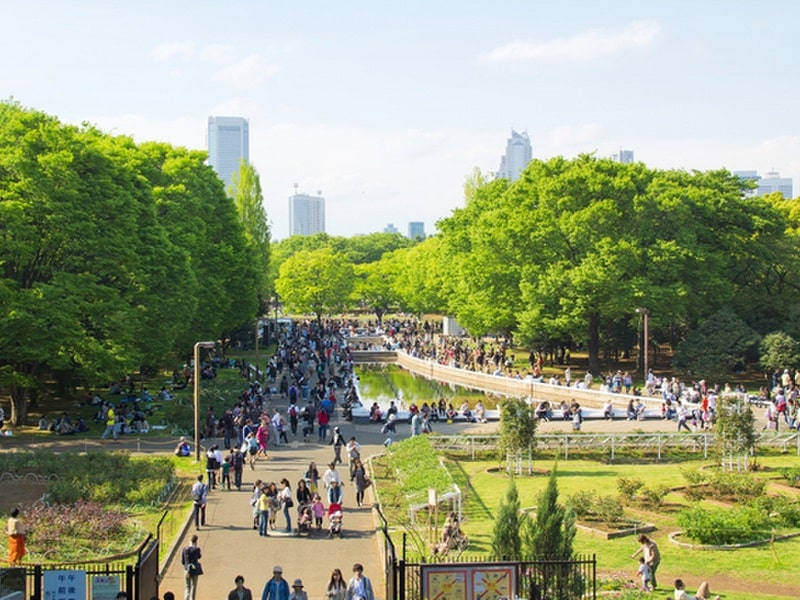
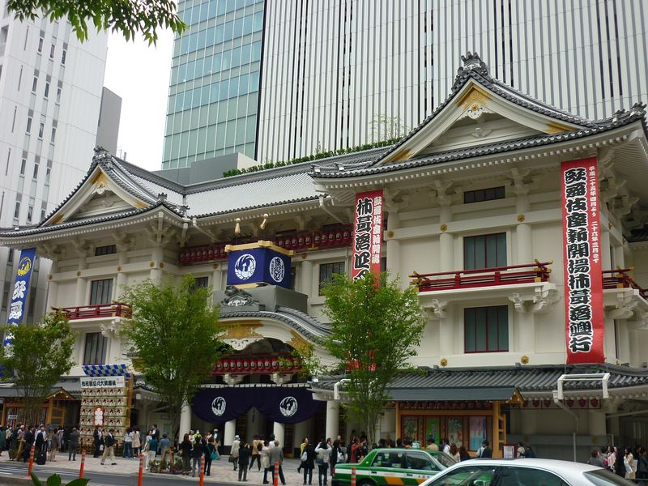
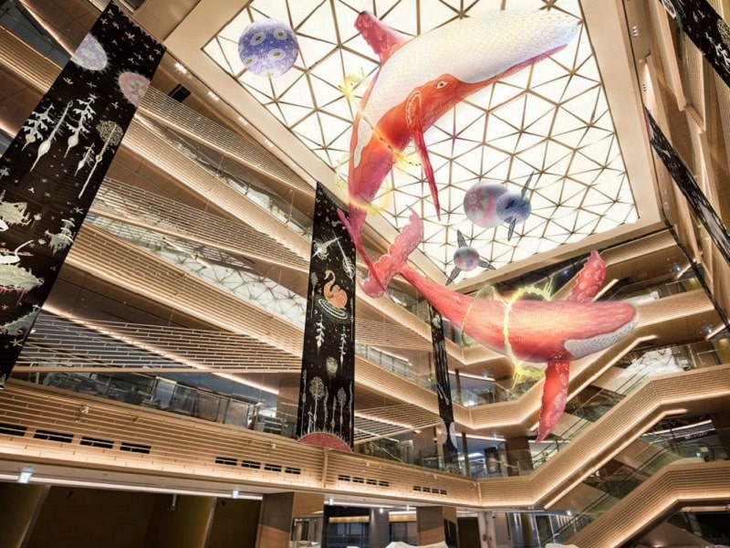
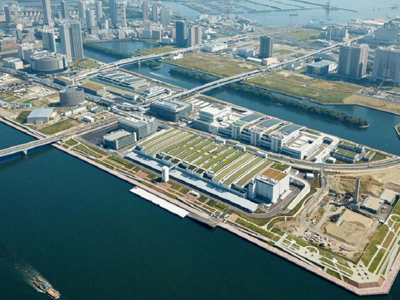
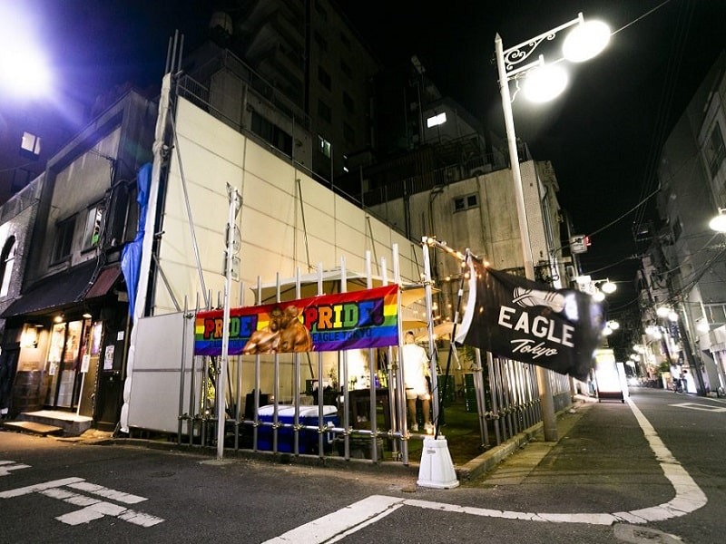
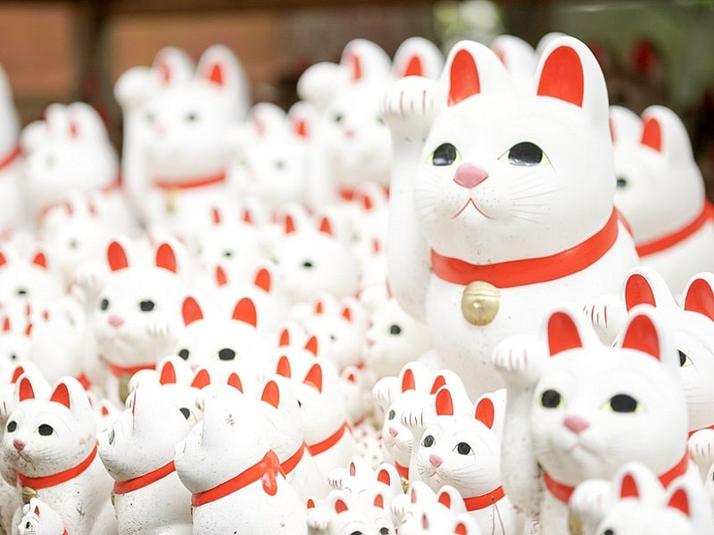

Статья
Не покидайте столицу, не выполнив указанные ниже пункты. От очевидного до менее известного-вот список по всему Токио. То, что не перестаёт волновать, но в порой расстраивает в Токио, это то, что это город, с кажущимися бесконечными вариантами мнений о нём и от различных возможностей. Не важно, еда это, культура, искусство, история, шоппинг или приключения. Можно провести всю жизнь исследуя Токио, и, возможно, никогда не удастся изучить его до конца. Токио — это кошмар для нерешительных и аппетитный культурный праздник для вечно голодных искателей приключений. Составление списка пунктов по Токио — это своего рода подвиг, конечно это не полный список. Это только его начало!
Пункт №1 Деформированный мир Яёи Кусама.
Обернули в DIV и дали max-width а заоодно и коммент туда же
Музей Яёи Кусанаги, который открыли на Синдзюку в 2017 году, является первым музеем, посвящённым умопомрачительному миру одной из самых влиятельных фигур современного искусства Японии. По всему миру проходят временные ретроспективы и сезонные выставки, которые имеют особенность заканчиваться. Этот музей открыт для всех постоянно.
Пункт №2. Путешествие во времени с помощью Янака Гиндза.
border делает границы обхекта по div а не по твоей картинке
Исследовать наиболее изученные туристические и футуристические тропы, такие как Сибуя и Синдзюку — это само собой разумеющееся, но для того, чтобы попробовать что-то новое, обязательно стоит посетить традиционный, старый райой Янака Гиндза Ситамати. Уголок, замёрзший во времени, расположенный в северной части Токио, оставался не тронутым в течение последних пяти десятилетий. Это идеальное место для обедов, путешествий во времени и покупок.
с уменьшением width или height граница подстраивается так как ты уменьшаешь или увеличиваешь блочный объект
Пункт №3. Потерянные часы в Дайканъяма.

display: block; I love you
Кафе с террасой и местами внутри, лаундж территория с большим количеством мест, бесконечный выбор книг всех стилей и пластинок, а также самая большая коллекция журналов на всех языках мира, которую Вы когда-либо могли видеть! Всё это можно найти в T-site Daikanyama! Три отдельных двухэтажных здания, соединённые между собой проходами, стеклянными стенами от пола до потолка, залитыми естественным светом! Единственный минус этого места-это то, что Вы не можете здесь жить.
Пункт №4. Наблюдение за посетителями в парке Йойоги.
Йойоги парк, который расположен прямо позади главной, «сахарной», шумной улицы Такесита. Парк не является идеальным и самым красивым, как например парк Синдзюку Гёэн, но у Йойоги есть своё очарование, которое заключается в том, что это парк соединяет Сибуя и лучшее место для общения. Здесь можно увидеть всё: от рок-банд, репетирующих свой перфоманс, тренировок спортсменов и обычных людей, которые выгуливают своих идеально выстриженных собачек или уличных артистов, что делают этот парк отличным местом для наблюдения за окружающими круглогодично!
Пункт №5. Охватите спокойствие храма Мэйдзи.

Спасибо лайфхаку от Жени.
По соседству с парком Йойоги находиться царственный храм Мэйдзи. Расположенный между игривой Харадзюку и эклектичным Йойоги храм Мэйдзи своего рода путь, ведущий к святыне, окружённый высокими вечнозелёными широколиственными деревьями, которые создают барьер спокойствия. Прогуливаясь по дорогам храма, нельзя не удивиться окружающему спокойствию и возможно забыть, что находится он в центре одного из самых оживлённых городов мира. Построенный в 1920 в честь императора Мэйдзи и императрицы Сёко, здесь круглый год проводятся традиционные свадьбы, за которыми может понаблюдать любой желающий, и различные религиозные мероприятия.
Пункт №6. Посмотрите шоу в Кабуки Гиндза.
Если попробовать описать Кабуки для Японии в пару слов, то это тоже самое, что Шекспир для Англии или как опера для Италии или Бродвей для США. Традиционный театр страны, он отличается продуманным костюмом, долгим и богатым наследием и играет важную роль в культурном развитии страны. Одно из лучших мест, где можно увидеть Кабуки — это театр, расположенный на Гиндза.
Пункт №7. Узнайте, насколько серьёзно токийцы относятся к покупкам в шоппинг-центре Ginza Six.
Ginza Six— это один из новейших и экстравагантных универмагов Токио. Если Вы проведёте всего 1 день в столице будет заметно, на сколько серьёзно токийцы относятся к своим торговым центрам, и Ginza Six-отличный тому пример. В нём представлены не только самые крупные имена в мире розничной торговли, но и инсталляционное искусство Кусамы Яёй, Фунаи Миса, Оумаки Синдзи, а также французских талантов Даниэля Бюрена и Патрика Бланка.
Пункт №8. Запах рыбы в новом рынке Тойосу.
В октябре 2018 года исторический рынок Цукидзи был перенесен в Тойосу, что закрыло историю в 83 года работы с самой свежей рыбой города. Новый рынок, расположенный на набережной Тойосу, в 1,7 раз больше предыдущего, имеет улучшенную систему санитарного менеджмента и закрытые помещения для регулирования внутренней температуры. Теперь за аукционами можно наблюдать из-за стекла.
Видишь Статью №8?-Нет. И я нет, а она есть! check display
Пункт №9. Вечеринка на Нитёмэ.
Во многих крупных мегаполисах «гей-районы» кажутся умирающей породой, но здесь в Токио, в районе Синдзюку Нитёмэ, это не так. Этот уголок в центре Токио представляет собой сеть дорог и переулков, в котором проживает эклектичная семья баров, клубов и ресторанов, ориентированных на ЛГБТ. Заведения открыты почти каждую ночь, особенно популярны по пятницам и субботам. Если есть интерес и захочется посетить один из самых оживлённых городских центров развлечений, не упустите возможность!
Пункт №10. Волна в храм котов в Готокудзи.
Известный многим как просто «храм кошки», потому что в нём есть бесконечные ряды милых фигурок манэки-нэко, которые приветствуют гостей с одной поднятой лапой. Располагается он не в самой туристической части Токио, однако посещение его того стоит! Чтобы совершить идеальный снимок для инстаграма. Легенда о храме гласит, что однажды во время грозы добрый кот привел феодала в безопасное место, подзывая его внутрь всезнающей маленькой волной.